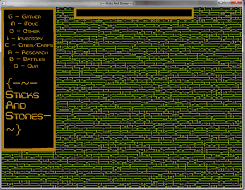

Sticks & Stones

Introduction
Sticks & Stones is a 2D resource collecting game where you adventure through an expansive world.
The full game is to be released Q1 2012 allthough updates are planned.
Demo
You can download the demo by clicking the download button below.
Released on 26/06/11 (DD/MM/YY) this does not reflect the nature of the finished product.
Download - Mirror
Credits
Game Developer: Reed Oei (Kytuzian)
Producer & Web Developer: Eden Crow
Special Thanks To: Joe Savage